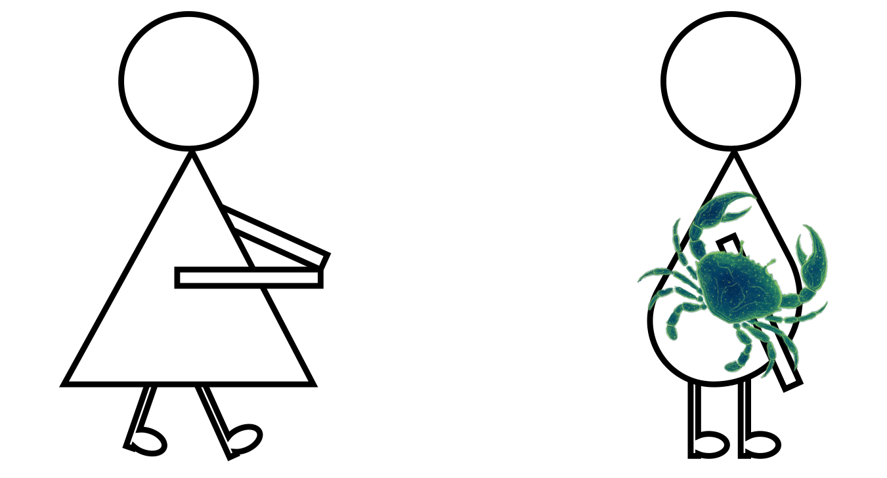
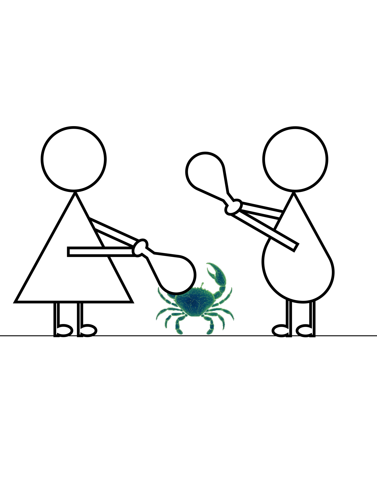

En sykdom som treffer verdensbasis. Vi alle er ganske observante på hvor farlig kreft er og hvor mange som dør av kreft i løpet av ett år. I Norge alene var dødsfallet på 11 450 i løpet av 2024. Hva som gjør kreft så alvorlig er en brutal behandling som har tatt knekken på de fleste pasienter, både for de som overlever og for de som omkommer og mange ulike varianter som dikterer overlevelsessjansen til en pasient. Det overraskes ikke at kreft har mange pengeinnsamlinger, arrangementer dedikert til å spre bevissthet mot kreft og sentere for å håndtere pasienter som overlever.
Men få tørr å spørre hvordan det er å sitte å leve med kreft? Hvordan er det å leve med det og vite at det finnes en sjanse for at du kan dø når som helst?
Vi tok da kontakt med en student på Høgskolen i Østfold, Ole Martin Hansen Kopperud. Han fikk nemlig kreft i 2022 og fikk da kreften Hodgkins lymfom. En type kreft som har muligheten til å spre seg rundt i lymfesystemet som ligger inne i immunsystemet. Etter en lang kamp så ble han endelig kreftfri, med noen etter-effekter som å svette mer enn vanlig og ujevn energi nivå, som er noe han sier at han kan leve med absolutt.
Vi tok da kontakt med en student på Høgskolen i Østfold, Ole Martin Hansen Kopperud. Han fikk nemlig kreft i 2022 og fikk da kreften Hodgkins lymfom. En type kreft som har muligheten til å spre seg rundt i lymfesystemet som ligger inne i immunsystemet. Etter en lang kamp så ble han endelig kreftfri, med noen etter-effekter som å svette mer enn vanlig og ujevn energi nivå, som er noe han sier at han kan leve med absolutt.
Ole Martin beskriver de generelle kjennetegnene når man går på selvgift. Han gikk ned i vekt, våknet opp i kaldsvette nesten hver natt, dårlig matlyst og ekstreme brystsmerter. Under slike konditioner, så hadde nok en falt i kjelleren. Mange kreft pasienter kan kjenne på stress og konstant dødsangst mens de lever med kreft.

Her skiller Ole Martin seg ut fra de andre kreftpasientene. Han innrømmer selv at han er ganske optimist noen ganger litt for optimist, i hans mening. Men dette optimistiske synet er kanskje det som hjalp ham med å komme seg gjennom kreften i første omgang.
Nå skal det sies at det kommer absolutt an på hva slags kreft man har, men mange som får kreft og lever med får et nytt syn på livet. Mange pasienter tar da muligheten til å gjøre ting de ønsker, kall det en sånn bucket list. Selv i slike livstruende tilstander velger de derfor å nyte livet med det de kan, som er også noe Ole Martin gjorde under hans behandling.
Han startet en YouTube-kanal for å dokumentere hans reise gjennom kreften hans, var veldig åpen om det til alle vennene på familiene hans med å legge ut en melding på Facebook og han levde livet som vanlig med de han er glad i. Det var selvfølgelig perioder der ting så litt vagt ut, han nekter ikke det, men han synes det var bedre å fokusere energien sin på å være glad og optimist.
Nevnt tidligere i artikkelen så klarte Ole Martin å vinne kampen mot kreft. Behandlingen hans gikk da soleklart bra og han har nå vært 2 år i remisjon som er etterbehandlingen og for å bli stemplet som total kreftfri så må han altså gå 5 år i remisjon.
Ikke alle er like heldige og blir kreftfri, men poenget med artikkelen er å ikke la livet gå for gitt selv om man er i effekten av en livstruende sykdom. Lev. Lev så mye du kan gjøre uansett hva. Om man ikke kommer gjennom kampen har man i hvert fall fått noen fine siste øyeblikk i livet og om du er heldig har du nå et nytt syn på livet der du, vet at man kan ikke ta alle dager for gitt.